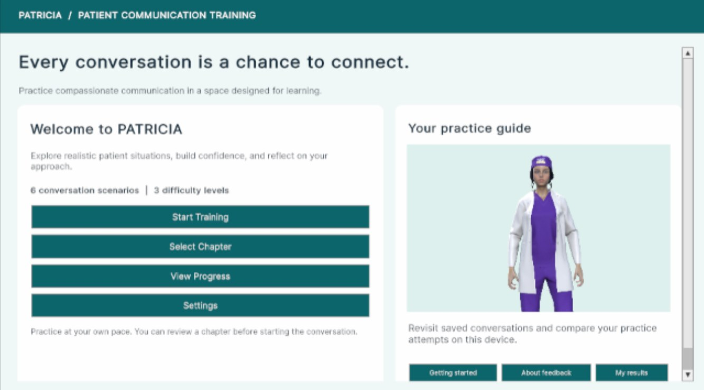

Virtual-patient communication training
A simulation application where healthcare learners practice difficult conversations — such as substance-use discussions — with AI-driven virtual patients and family members, then get feedback on both what they covered and how they communicated. I'm building it with teammates Jenah Mansour and Nour Khalifa, and my part is the Coaching AI: the system that will decide whether a learner met each communication objective, and explain why.
What I'm building: the Coaching AI
This work is in progress. The sections below describe my plan for the system and my thesis.
Turning a rubric into something a model can check
"Showed empathy" or "asked about substance use without judgment" is easy for an instructor to recognize and hard for software to detect. I'll build representations of each objective's completion conditions and rubric so the system can tell, from the conversation, whether an objective was met.
Feedback tied to evidence
A score alone doesn't teach anything. The Coaching AI will generate feedback that points to the specific moments in the conversation behind each judgment, so learners can see what worked and what to try differently.
Coaching that adapts to the learner
A beginner needs more guidance during a conversation; an expert needs to be left alone. I plan to implement beginner, intermediate, and expert coaching policies that change when and how the system steps in, and to define the report that passes results to the Unity application my teammates are building.
Measuring whether it's right
My honors thesis will center on this system and a bounded validation study: comparing the Coaching AI's judgments on objective completion and feedback quality against human-reviewed annotations, with error analysis of where and why they disagree.
